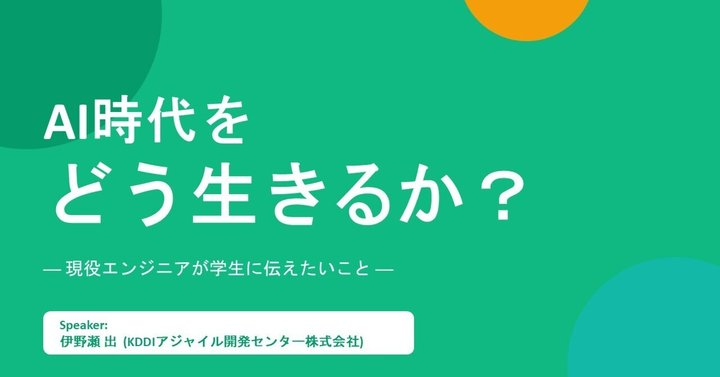
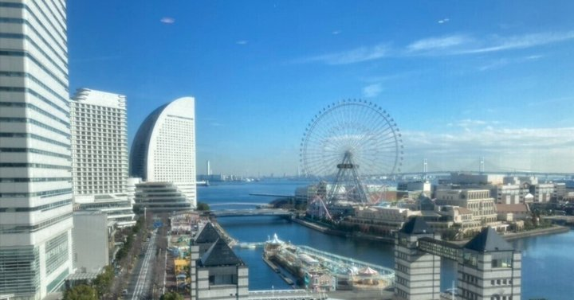

【EDIX東京2026】活動レポート その1
日本最大級の教育展示会「EDIX東京」へ参加。学生部リーダーによるリサーチレポート第1弾です。
Activities
学生部が取り組んでいる活動を紹介します。学ぶ・つくる・発信する——いろいろな入り口があります。
Articles
活動の様子や学びを、note で発信しています。ジャンルごとに、各記事のくわしい内容をご覧いただけます。


What we do
講座
生成AIの使い方を、初心者にもわかりやすく学べる講座です。
レビュー
話題のAIツールを実際に使って、使いどころや感想を共有します。
ハンズオン
AIを使ったコーディングを、手を動かしながら体験します。
事例共有
学生がAIをどう使っているか、事例を持ち寄って共有します。
イベント
みんなで集まって学び、手を動かす場をひらきます。
制作
学びの入り口になる教材やコンテンツをつくります。
発信
活動や学びを、Web・SNS・note で発信します。
プロジェクト
AIを使ったプロジェクトを企画し、実際に形にします。
連携
他の団体・企業・学校とも連携し、活動を広げていきます。